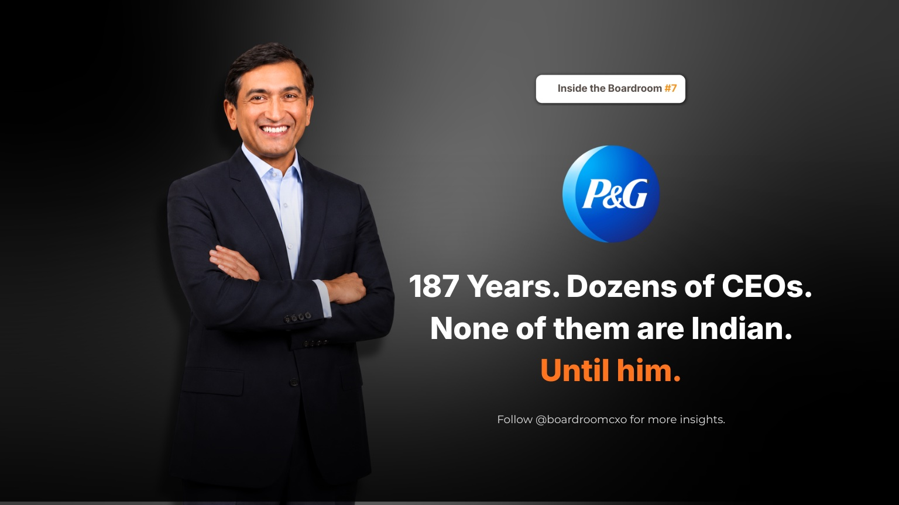

Key Takeaways
- On January 1, 2026, Shailesh Jejurikar became the first person of Indian origin to lead Procter & Gamble, after joining it in 1989 and never leaving.
- Jejurikar kept raising his hand for difficult postings like East Africa, and by 2019 ran Global Fabric and Home Care, about a third of company sales.
- Boards should map a long-tenure candidate's postings, not just titles, and test whether those years were compounding or repeating.
187 years. Not one Indian CEO, until a boy from Mumbai who joined the company fresh out of business school, and never left, walked into the top job.
On January 1, 2026, Shailesh Jejurikar became CEO of Procter & Gamble, the first person of Indian origin to lead it in nearly two centuries. On August 1, 2026, he also became Chairman of its Board. P&G reaches an estimated 5 billion people across more than 180 countries. He joined the company in 1989, straight out of IIM Lucknow, as an assistant brand manager in India. Then something unusual happened: nothing else happened. He never switched employers again.
Who Is Shailesh Jejurikar?
Shailesh Jejurikar is P&G's CEO, appointed effective January 1, 2026, after 36 years at the company, all of them inside the same organization. In an era when many managers change employers every few years to climb faster, he did the exact opposite. And he did it the hard way: while others chased comfortable postings, he kept raising his hand for the difficult ones, East Africa, then fabric and home care across Southeast Asia, India and Korea, running detergent brands in markets that rarely make a global headline. Each move was a quiet bet on discomfort over ease.
By 2019 he was running P&G's single biggest business, Global Fabric and Home Care, a sector worth about a third of company sales and holding Tide, Ariel, and Downy. He points to innovations like Tide Pods, and to consumer shifts such as people washing dishes a few at a time instead of a sinkful, the insight behind Dawn Power Wash. In 2021, he became Chief Operating Officer, the seat that typically precedes the top job.
What His Career Says About How P&G Actually Picks a CEO
The obvious read on this appointment is representation: the first Indian-origin CEO of a 187-year-old American consumer giant. The more useful read for anyone hiring senior leaders is different. P&G did not hand its largest, most political business unit and then the top job to someone who optimized for visibility. It handed them to someone whose résumé is full of markets other people avoided.
On understanding consumers, Jejurikar has said: "It's easy to say, tough to do. It requires intimately understanding people's articulated and unarticulated needs." That is not a line about strategy decks. It is a line about the kind of pattern recognition that only gets built by running unglamorous categories in unglamorous markets long enough to see what consumers actually do, not what they say in a focus group.
The world rewards those who leave to grow. He proved the bigger bet can be staying.
Common Mistakes Boards Make When Reading a Long-Tenure Candidate
Boards and search committees evaluating a candidate with one long tenure tend to make three errors.
They read long tenure as a lack of ambition or optionality, rather than checking what that tenure actually contained. Thirty-six years at one employer looks identical on a résumé whether it was thirty-six years of comfortable, low-risk postings or thirty-six years of the hardest assignments on offer. The difference only shows up when you ask what markets, what categories, and what condition the business was in when they took it over.
They overweight the foreign-degree, marquee-market signal and underweight operators who built range in markets the rest of the organization treats as a detour. Jejurikar's path ran through East Africa and Southeast Asia long before North America, not the postings that usually get internal buzz, and that is exactly what built the operating range the board eventually needed.
They evaluate P&L size without asking what was inherited versus built. Running a sector worth a third of company sales is a fact. Whether the leader grew it, defended it, or simply held the seat is the question that actually predicts what they will do with a bigger mandate.
A Framework for Spotting This Kind of Leader Earlier
When boards brief us on a CXO search, a long single-employer tenure gets three specific checks before it is treated as a strength.
- Map the postings, not just the titles. A leader who chose difficult markets and categories repeatedly, over decades, has a decision pattern worth more than the title on their final role.
- Ask what consumer shift they caught before it showed up in the data. The insight behind Dawn Power Wash, that people now wash dishes a few at a time rather than a sinkful, is the kind of ground-level pattern recognition that separates operators from administrators. Push candidates for a specific example, not a general claim of "consumer insight."
- Test whether their tenure was compounding or repeating. One long employer can mean thirty-six years of the same year repeated, or thirty-six years of expanding scope. The postings and the P&L history tell you which.
Why This Belongs in the Boardroom, Not Just the Business Pages
We wrote recently about Sudhir Sitapati's decision to leave HUL's safest seat for a smaller, messier Godrej Consumer, a bet that conviction and judgment travel with the person, not the institution. Jejurikar's story is the mirror image of that same lesson: staying inside one institution for thirty-six years, deliberately choosing its hardest assignments, can build exactly the same range that switching companies is usually assumed to require.
Both stories point to the same hiring problem. The market does not reward the flashiest career path or the most conventional one. It rewards boards that can read what a candidate actually did with the postings they were given, whichever direction that career moved.
Frequently Asked Questions
Who is Shailesh Jejurikar?
Shailesh Jejurikar is the Chairman, President and CEO of Procter & Gamble. He became CEO on January 1, 2026 and Chairman of the Board on August 1, 2026. He joined P&G in 1989 straight out of IIM Lucknow as an assistant brand manager in India and spent his entire 36-year career at the company, rising through roles in India, East Africa, Asia and North America and leading Global Fabric and Home Care before becoming Chief Operating Officer in 2021.
Why is Shailesh Jejurikar's appointment as P&G CEO significant?
Shailesh Jejurikar is the first person of Indian origin to lead Procter & Gamble in the company's nearly 187-year history. P&G reaches an estimated 5 billion consumers across more than 180 countries, making the appointment one of the most significant leadership milestones for Indian-origin executives in global consumer goods.
What did Shailesh Jejurikar run before becoming P&G CEO?
Before becoming CEO, Shailesh Jejurikar ran P&G's largest business unit, Global Fabric and Home Care, a sector that makes up about a third of company sales and includes Tide, Ariel, and Downy, as its CEO from 2019. He became P&G's Chief Operating Officer in 2021.
What markets did Shailesh Jejurikar work in during his career at P&G?
Shailesh Jejurikar started in India, took his first overseas posting in East Africa in 1996, then ran fabric and home care across Southeast Asia, India, Australia and Korea, largely in markets that rarely generate global headlines, and later led Home Care and Fabric Care in North America before being handed P&G's biggest business unit.
Why did Shailesh Jejurikar stay at one company for 36 years?
Shailesh Jejurikar joined P&G in 1989 and never switched employers, an unusual path in an era when many managers change companies every few years to climb faster. He instead raised his hand for difficult postings and product categories inside the same organization, a pattern that ultimately built the operating range P&G's board chose for the top job.
Sources
- Procter & Gamble, Shailesh G. Jejurikar: Chairman of the Board, President and Chief Executive Officer, August 2026
- Procter & Gamble, Shailesh Jejurikar: Chairman of the Board, President and Chief Executive Officer of The Procter & Gamble Company, August 2026
- Procter & Gamble, Shailesh Jejurikar Appointed Chairman of P&G Board of Directors, July 2026
- Procter & Gamble, Shailesh Jejurikar Talks About Unlocking Market Growth, April 2024
- Procter & Gamble, Shailesh G. Jejurikar: President, Global Fabric Care, August 2018
- The Economic Times, Three cheers & three chairs: P&G veteran Shailesh Jejurikar to add chairman's role, July 2026
- Financial Express, NEWSPOINT: Shailesh Jejurikar, incoming CEO, P&G, July 2025
Related Reading
Sudhir Sitapati: Why He Left HUL's Safest Seat for Godrej
Read → R · 02 Founder Leadership · July 2026Sanjiv Mehta: The HUL Leader Who Never Forgot Bhopal
Read → R · 03 Founder Leadership · July 2026Suresh Narayanan: The MD Who Walked Into the Maggi Ban
Read →Looking for a leader with the range, not just the résumé?
We map what a candidate actually did with the postings they were given, not just the titles they collected. Brief us on your next CXO mandate and we will tell you what the market actually has to offer.
Brief Us on a Mandate See all HR & People roles we fill →